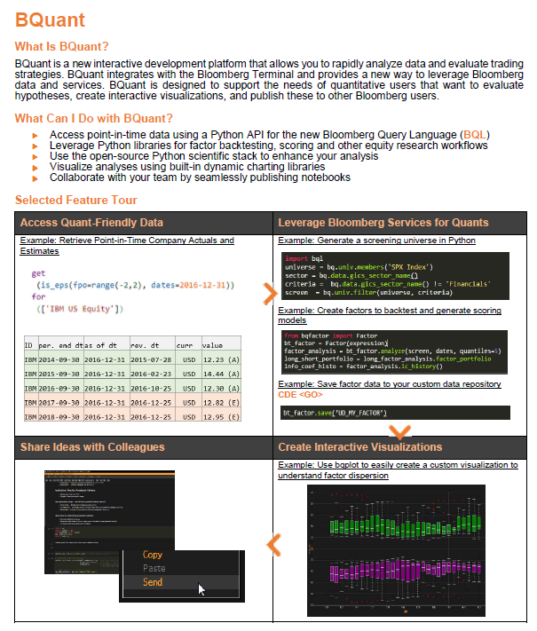
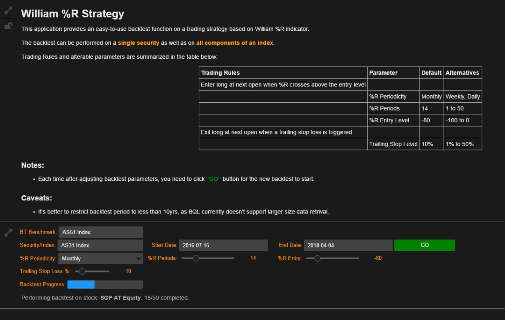
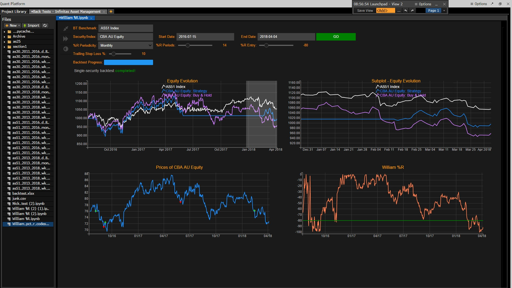
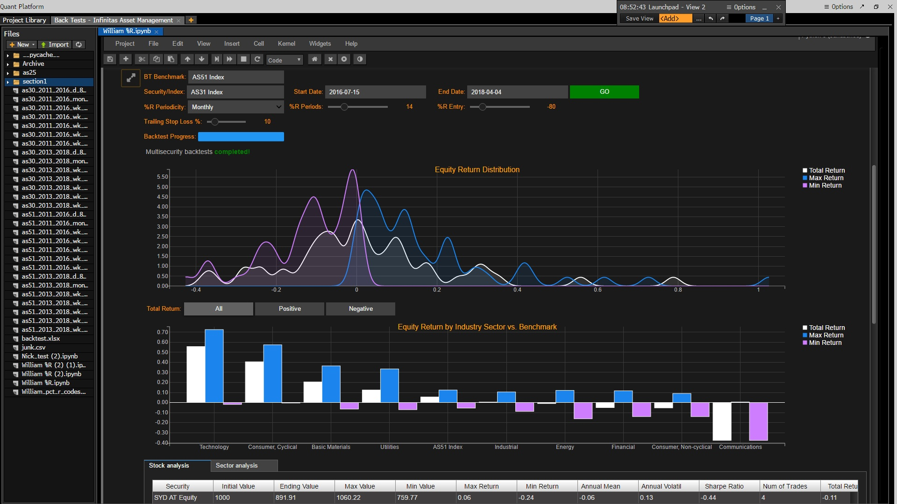
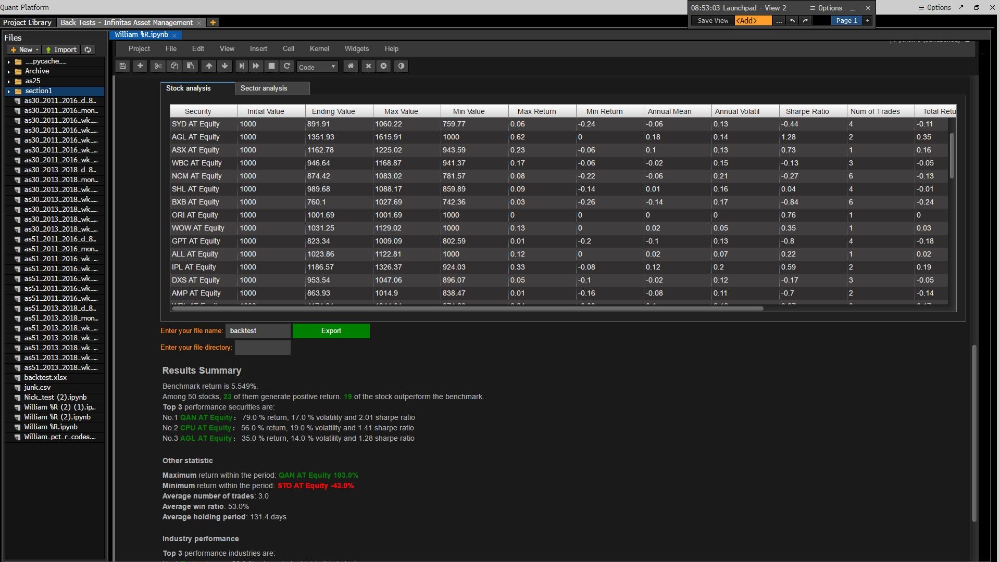

Bloomberg BQuant (BQNT)
![]()
Bloomberg is developing a new function in the Terminal, called BQuant, BQNT<GO>, under the Bloomberg Anywhere license. I happen to be able to test it thanks to a fund manager and find it could be a future way of using Bloomberg Terminal.
Background
Bloomberg recently made JupyterLab available inside the Terminal and invited partners to test it out. This function is named BQuant, or BQNT<GO>, which is still under heavy development, but the idea is just great. Jupyter notebooks inside Bloomberg Terminal! Just before this news, I was helping a fund manager in writing some alert programs that do some analysis on equity market and then send email notifications, which didn’t go well because first it is very easy to breach the data limit using Bloomberg API (blpapi) and second I wasn’t very comfortable about the presentation of analysis results. I was using poor HTML code in emails and didn’t find a convenient way to insert plots and figures. Besides, I was also writing some back testing code to evaluate potential trading strategies. But still there’s a concern as I won’t be working there full time and they probably won’t have a permanent programmer, so if they want to alter parameters a little bit it’ll be a problem.
But things happen, with BQNT or more specifically the Jupyter notebook, I can make an interactive UI-based application without worrying about the data limit issue, as they also provide a new data retrieval interface, BQL, Bloomberg Query Language. In the past, pulling data through blpapi is basically retrieving data from the Terminal. But BQL, something like SQL, is to submit the query request to Bloomberg’s server and get the data directly from server, which also enables basic calculations so as to further reduce the size of data being pulled out. Then, BQNT comes with pre-installed bqplot and some wrappers of libraries like ipwidgets, which makes visualization much easier and interactive. As BQNT is a customized JupyterLab, output cells can be maximized and code hided. The result is just like a single-page application.

The tearsheet above shows some basic features of BQNT, and of course there are more. There’s a gallery in the Terminal with several demos showing what BQNT can make, including portfolio performance report, security filtering, trading strategy back test, etc., quite inspiring.
With a quick play, I was able to write a multi-security back test of William %R based strategy with trailing stop. All input parameters can be varied using sliders, dropdowns, calendars and etc. There is also an autocomplete security selection widget to assist you in defining the universe. Plots and tables can be aligned nicely using HBox and VBox… So, I’m impressed, really.
I can foresee that in the future, users of Bloomberg Terminal can have BQNT powered applications tailored to their needs. For example, I want to know the stock volatility and price plot together with some commodity futures orderbook info. BQNT may give you the app. But of course, I’ve only a rough guess and there could be many possibles and impossibles ahead of BQNT. I’m a big fan, though.
My Work
BQL for Data Retrieval
We know there’s a blpapi available already. Using this API one can pull data from a Terminal to Excel, Python, etc. But there is a limit on the frequency or total queries allowed in a certain period, which however isn’t clear. As Bloomberg doesn’t allow local storage of its data, if we need to retrieve a sizeable data too many times, there will be an issue.
The good thing about BQNT is that it comes with a new query system – so called BQL. It allows simple calculations done on the server side so as to reduce the size of data transferred. And, people in Bloomberg said, by using BQL we are not very likely to face any data limit issue again. I haven’t done much stress tests so I can’t tell whether there is still a limit or not.
Some Quick Examples
Get all component stocks of an index:
import bql
bq = bql.Service()
securities = bq.univ.members('AS31 Index')Get OHLC data of all component stocks:
from bql.util import get_time_series
start_date = '2017-01-01'
end_date = '2018-01-01'
data = get_time_series(securities, ['PX_LAST', 'PX_OPEN', 'PX_HIGH', 'PX_LOW'], start_date, end_date)If I want to know the industry sector of these stock, all I need is:
req = bql.Request(securities, bq.data.industry_sector())
data_industry = bql.combined_df(bq.execute(req))The returned data is a pandas.DataFrame, which is just awesome!
Customised JupyterLab
Jupyter Notebook has always been a favourite environment in data science. No need to say much. A JupyterLab inside Bloomberg Terminal together with BQL, basically the core idea of BQNT, is no doubt fantastic. For quants who need to do a lot of testings on trading ideas, filtering of securities, etc., this integrated environment is absolutely a good place to sort everything out. Moreover, files in BQNT are synced under a BBA license, you can easily pick up your work from any Terminal. In our meeting today, the size of this free cloud storage is said to be about 250MB but may be upgraded.
For fund managers or traders who want only a ready-to-use application, they can have some programmers to make one for them. The BQNT team kindly demonstrated a beta feature, where a ‘consumer view’ can be shared to others, which hides all Jupyter Notebook related parts and is really the final output alone — just like the Calculator on Windows.
The %R Backtesting App
This App I wrote replicates BT<GO> in its back testing outputs, but comes with more flexibility such as trailing stop loss, which isn’t available in BT<GO>. It serves as a demo of BQNT powered application, validating current beta.
The objectives of the app are:
- to perform %R strategy on a single security as well as on all components of an index;
- to provide both quantitative and qualitative back testing results;
- be friendly to any user with zero programming knowledge.
Main UI
The main UI provides a short description of the trading strategy under back test, followed by a control panel where we can specify benchmark, underlying, time range, % parameters as well as trailing stop loss percentage. I also put a progress bar and status bar below for more immediate feedback.

Outputs
If the underlying selected is a single security, e.g. CBA AU Equity, the simple back test output is something like below. An InteractiveLinePlot linked with a subplot to show equity evolution in selection; a LinePlot for the price series of the security with markers for enters and exits; and a LinePlot for the %R indicator.

If the underlying selected is an index, e.g. AS31 Index, the back test is performed on each individual component of the index and results are presented below. A KDEPlot shows the distribution of total return, max return and min return, followed by a ToggleButtons to show All, Positive only and Negative only. Equity Return by industry sector and the benchmark return are sorted and plotted below.

Then there is the detailed DataGrid for all calculated metrics of all securities and of each industry sectors, just like the output in BT<GO>. Results can be exported to a spreadsheet which will be conveniently stored in the BQNT platform, or the ‘cloud’ of size 250MB in total. A qualitative summary of this particular back test is provided in the end.

This App is by no means a finished work. I basically tried to mix in as many different things as possible. The end product should be one such that provides a condensed and conclusive opinion after each run, considering that its users may be those fund managers who do not want to get their hands dirty.
Other Thoughts
In my chat with Bloomberg BQNT team, I visioned BQNT powered apps may be the future way of using Bloomberg. For one, with more internal integration worked out, like the current one with PORT<GO>, surely users can use these UI-based apps to get jobs done. The good thing is that it can put everything you need together in one place, and only those you need. Once consumer view is rolled out, this will be more evident. They also are developing a scheduling module which will run Notebooks automatically, although at an additional cost.
Another thing I suggested is a marketplace for those BQNT powered apps. Say, I’ve developed a market analysis application on BQNT, maybe I can put it for sale on the marketplace so someone else won’t need to reinvent the wheel. It can also foster a community around BQNT, if any. The only downside is that BQNT is accessible only under BBA licence, which isn’t cheap. Individual programmers / quants may not be able to afford it, and those in big institutions may not have the time and right to build and sell apps on it. This kinda sucks.
I can see the huge potential of BQNT, which if operates well can be the new way of using Bloomberg Terminal — the learning curve of Terminal is really too steep for many current and potential users, and they don’t get very much out of it. But, if there are many ready-to-use UI-based applications for their customised needs, things definitely will be better. Unfortunately, BQNT is not open-source, and the access to it is very limited (BBA licence), I don’t believe there will be an active community and hence a marketplace of a variety of apps.